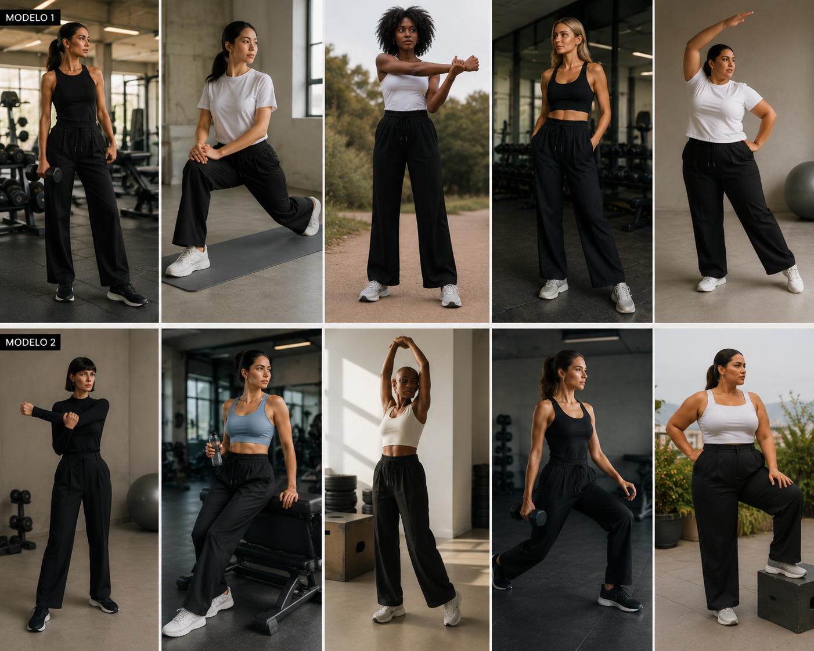

Base corporativa
Calça flare técnica
Uma calça de malhar com cós confortável, elasticidade e caída mais adulta. Precisa funcionar sentada, andando e em reunião.
Este território pesquisa roupas de malhar com presença cotidiana: peças elásticas, confortáveis e funcionais que sustentem trabalho, deslocamento, casa, cuidado e corpo em movimento.
A pergunta aqui é simples e difícil: que roupa permite treino, mobilidade e conforto sem perder presença no trabalho, na rua, em casa, no cuidado, no almoço ou em uma viagem curta?
Uma calça de malhar com cós confortável, elasticidade e caída mais adulta. Precisa funcionar sentada, andando e em reunião.
Não é alfaiataria rígida. É uma camada de presença para usar sobre top ou camiseta técnica depois do treino.
Peça de malha com suporte e linhas limpas, pensada para não subir, não marcar excessivamente e compor com calça ou blazer.
Camada leve para deslocamento, ar-condicionado e entrada em ambientes de trabalho, casa ou compromisso. Menos esportiva, mais silenciosa.
Uma hipótese para quem quer liberdade visual sem abrir mão de mobilidade: short interno, comprimento urbano e tecido com recuperação.
Calça ampla de malha técnica para viagem, longos períodos sentada e presença visual mais próxima do guarda-roupa de trabalho.
Presença não é promessa de dress code universal. É uma direção: desenvolver activewear com maturidade visual suficiente para contextos profissionais reais.
Se a peça ainda parece “roupa de academia tentando parecer social”, ela não passou.
Sentar, caminhar, dirigir, cruzar a cidade, carregar peso, cuidar de criança e permanecer confortável por horas.
A roupa deve aceitar sobreposição, bolsa, tênis limpo, trabalho, casa, rua e compromisso sem precisar de desculpa.
Conforto e mobilidade total
Aparência de alfaiataria com comportamento técnico. Elástico embutido no cós traseiro, tecido com elasticidade em 4 direções e caimento reto que sustenta movimento sem entregar.

Referências visuais de desenvolvimento · não representam produto final · composição e modelagem em validação